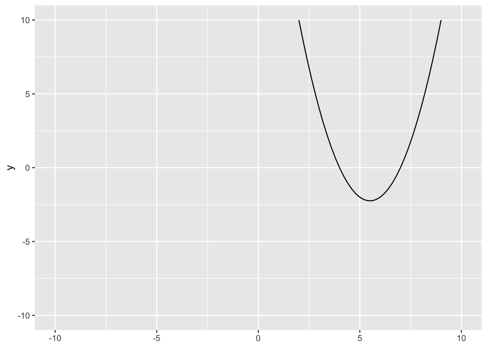
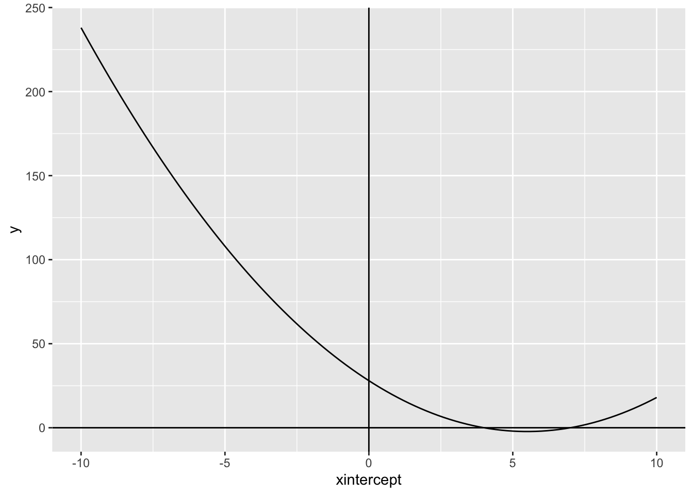
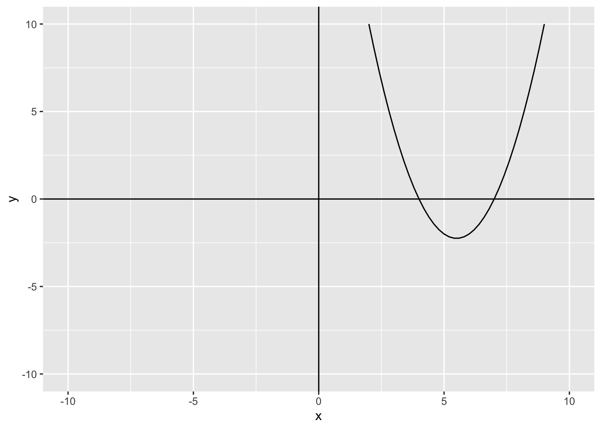
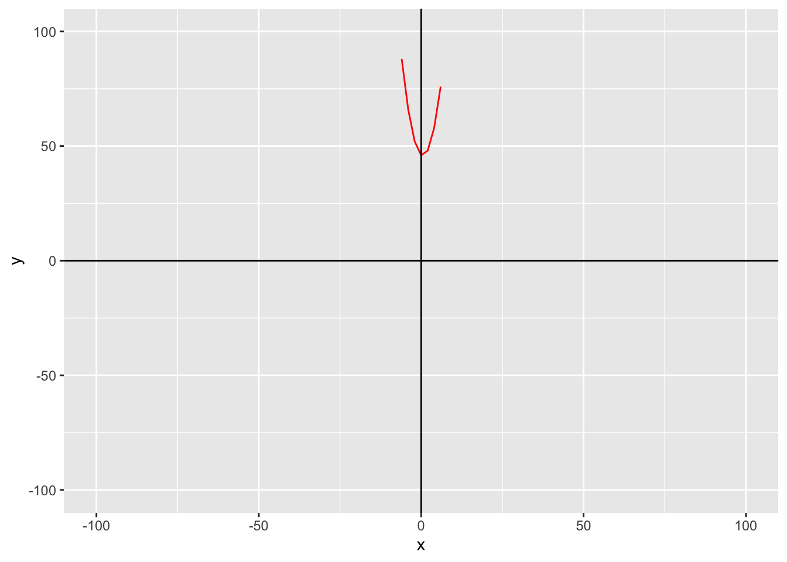
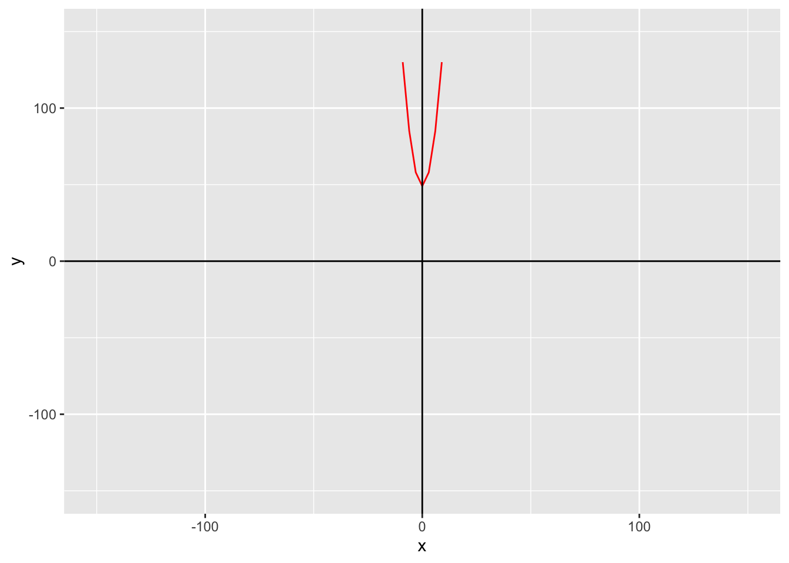
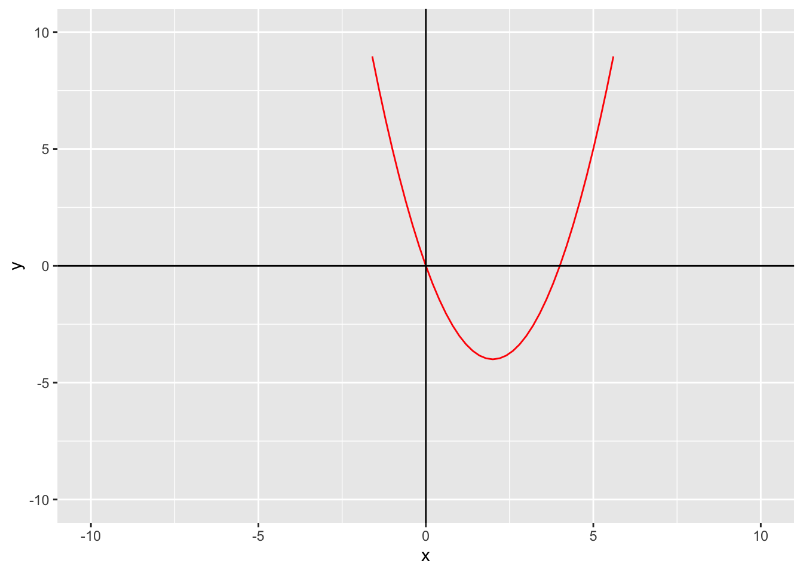

Code
f <- function(x) {
x^2 - 11*x + 28
}We know what a quadratic equation is:
\[ ax^2 + bx + c = 0 \]
But what if we could actually see the answers, plotted out in a graph?
Before we can plot anything, we need an equation.
We will be plotting 4 equations. Here they are:
We need to make a function first. We will use variables f, g, h, and k for our functions. Here’s how you make a function:
f <- function(x) {
x^2 - 11*x + 28
}Let’s break down each part of the function. The function(x) part is the number we will plug in, it is the same as writing \(f(x)\). Now, what does \(f(x)\) equal? That is the part that goes in the curly brackets. We also want to save it to an object f.
This:
f <- function(x) {
x^2 - 11*x + 28
}Is the same thing as this:
\[ f(x) = x^2 - 11x + 28 \]
Here’s what the rest of the functions are written in code:
g <- function(x) {
x^2 - x + 46
}
h <- function(x) {
x^2 + 49
}
k <- function(x) {
x^2 -4*x
}And here they are not in code; \(g(x) = x^2 - x + 46\), \(h(x) = x^2 + 49\), \(k(x) = x^2 - 4x\)
Now that we have all of our functions written out, we can plug any number in for \(x\)
f(1)[1] 18k(3)[1] -3g(-7)[1] 102h(13)[1] 218Now that we have a couple values for x, we can plot.
First, we need to load in the tidyverse package.
library(tidyverse)This will be made with ggplot, just with nothing in the parentheses. We want to use geom_function so we can see our function mapped out, and we want function f.
ggplot() +
geom_function(fun = f)The next layer we want to add will be the limits of the Cartesian plane.
ggplot() +
geom_function(fun = f) +
xlim(-10, 10) +
ylim(-10, 10)
The plane will span 10 units of measurement on either side of 0.
Now, we can make the graph look fancier. We can add vertical and horizontal lines using geom_hline() and geom_vline(). For both we need to provide an x and a y intercept which will both be 0.
ggplot() +
geom_function(fun = f) +
xlim(-10, 10) +
geom_hline(yintercept = 0) +
geom_vline(xintercept = 0)
We can also label the x and y axis using labs():
ggplot() +
geom_function(fun = f) +
xlim(-10, 10) +
ylim(-10, 10) +
geom_hline(yintercept = 0) +
geom_vline(xintercept = 0) +
labs(x = "x",
y = "y")
We can also change the color of the line, that way it is easier to see:
ggplot() +
geom_function(fun = f, color = "red") +
xlim(-10, 10) +
ylim(-10, 10) +
geom_hline(yintercept = 0) +
geom_vline(xintercept = 0) +
labs(x = "x",
y = "y")
The rest of the graphs are made the same way, just in geom_function(), you change what fun equals.
ggplot() +
geom_function(fun = g, color = "red") +
xlim(-100, 100) +
ylim(-100, 100) +
geom_hline(yintercept = 0) +
geom_vline(xintercept = 0) +
labs(x = "x",
y = "y")
gggplot() +
geom_function(fun = h, color = "red") +
xlim(-150, 150) +
ylim(-150, 150) +
geom_hline(yintercept = 0) +
geom_vline(xintercept = 0) +
labs(x = "x",
y = "y")
hggplot() +
geom_function(fun = k, color = "red") +
xlim(-10, 10) +
ylim(-10, 10) +
geom_hline(yintercept = 0) +
geom_vline(xintercept = 0) +
labs(x = "x",
y = "y")
kYou can use the same approach for any quadratic function!